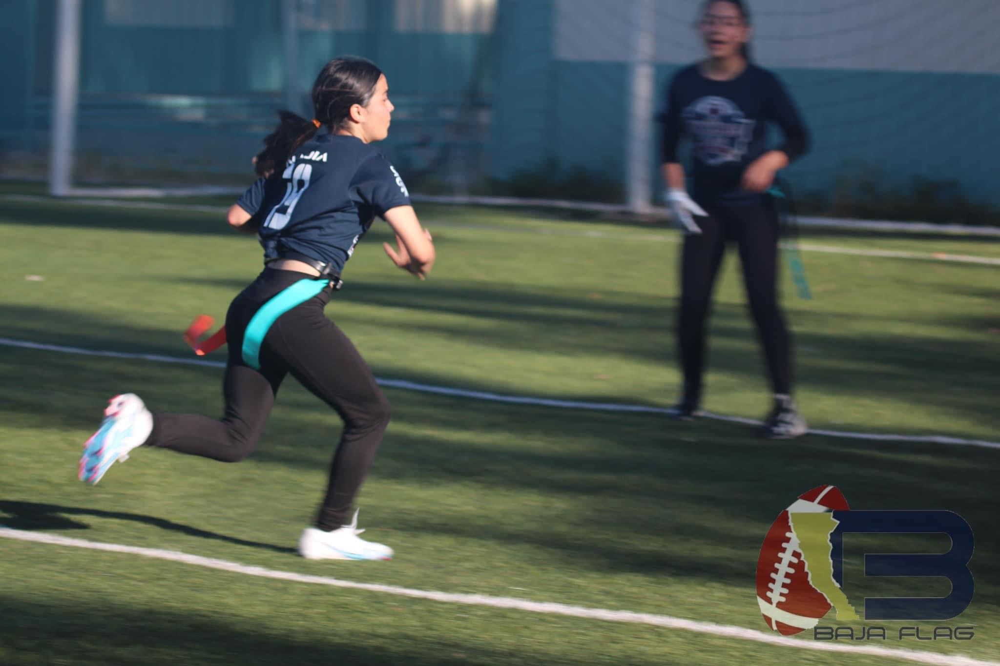

|
|
Regla del downs
- En el flag football, los equipos tienen una serie limitada de intentos para avanzar el balón.
- Un down se completa cuando el balón toca el suelo, el portador del balón es "derribado" (se le quita la
bandera), o se completa un pase.
- Un equipo tiene generalmente cuatro downs para avanzar 10 yardas y ganar un nuevo set de downs.
- Si el equipo no logra avanzar las 10 yardas, el balón se entrega al equipo contrario en el lugar donde
el
último down terminó.
- El objetivo es avanzar el balón hacia la zona de anotación para marcar puntos.
- Las reglas de downs varían según la liga y el nivel de competencia.
|

|
Regla de las banderas
- En el flag football, los jugadores llevan cintas o banderas que se colocan en la cintura.
- El objetivo del equipo defensivo es quitar la bandera del portador del balón para detener la jugada.
- Una vez que la bandera es retirada, la jugada se considera terminada y el balón se coloca en el lugar
donde se extrajo la bandera.
- El portador del balón no puede proteger su bandera con las manos o el cuerpo.
- Las reglas de las banderas ayudan a evitar el contacto físico y promueven un juego más seguro y justo.
- Los jugadores deben asegurarse de que sus banderas estén bien aseguradas antes de comenzar el juego.
|
|
|
Regla de las penalizaciones
- Las penalizaciones se aplican cuando un equipo comete una falta durante el juego.
- Las faltas pueden incluir bloqueos ilegales, interferencia de pase, sujetar, agarrar las banderas, entre
otros.
- Las penalizaciones resultan en la pérdida de yardas para el equipo infractor y, en algunos casos, la
repetición del down.
- Los árbitros son responsables de identificar y sancionar las faltas de acuerdo con las reglas del juego.
- Las penalizaciones pueden influir en el resultado del juego, por lo que es importante que los jugadores
jueguen limpio y respeten las reglas.
- Los equipos deben aprender a adaptarse a las penalizaciones y ajustar su estrategia en consecuencia.
|
|
Regla del tiempo
- El tiempo en el flag football puede variar según la liga y el formato del juego.
- Los juegos suelen dividirse en cuartos, con un tiempo específico para cada cuarto.
- El reloj puede detenerse en ciertas situaciones, como tiempos fuera, cambios de posesión y lesiones.
- El tiempo extra puede ser necesario en caso de empate al final del tiempo reglamentario.
- El manejo adecuado del tiempo es crucial para controlar el ritmo del juego y maximizar las oportunidades
de anotación.
- Los equipos deben ser conscientes del tiempo restante y ajustar su estrategia en consecuencia.
|